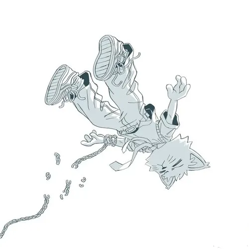
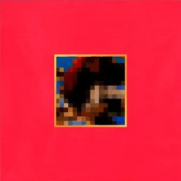
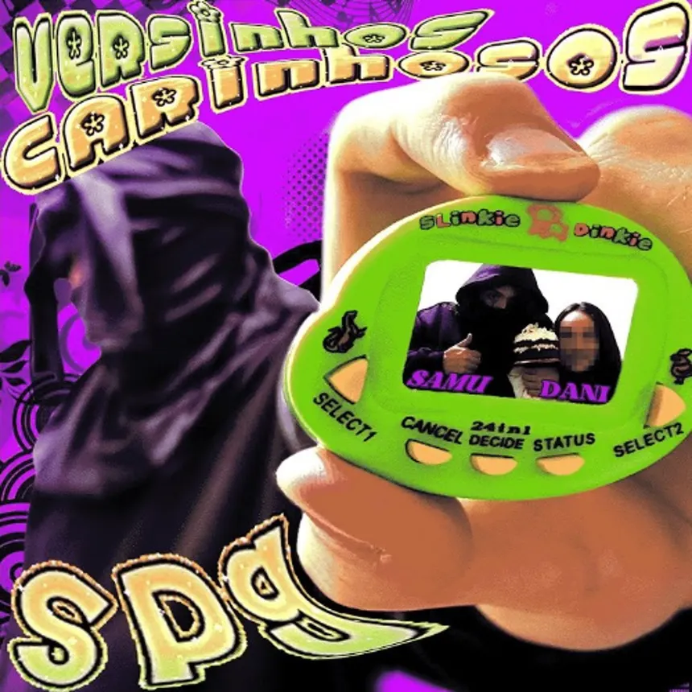

A trilogia Validation, do YUNG LIXO, retrata uma jornada de amadurecimento dividida em quatro fases principais: Buscar: A ambiçao inicial por sonhos, sucesso e reconhecimento (Validation). Conquistar: A chegada das vitorias acompanhada de nostalgia e lembranças do passado (Bittersweet Memories). Lembrar e Aceitar: A compreensão de que os ciclos mudam e que um termino nao anula o valor do que passou (13 Lentes de um Final Feliz). Seguir em frente: O ciclo final de aceitação e maturidade. Em suma, a obra narra a trajetória de ir atrás de um objetivo, alcançá-lo, lidar com as memórias deixadas pelo caminho e aprender a aceitar novos começos.

BONDA e uma serie de albuns feita sob o nome MC VV, conhecida pelo humor absurdo, paródias, personagens e referências à cultura pop e ao rap. A série inclui BONDA, BONDA 2, BONDA 3 e BONDA GOOD 4SS JOB. Diferente de 13 Lentes, o foco aqui é muito mais a zoeira, a criatividade e a desconstrução de estilos musicais.

A SPG (Sebastiao Pelotas Gang) é um projeto e grupo musical underground formado por N11ne e Samuel Noticias, fortemente ligado ao universo criativo do artista Yung Lixo (Yun Li / MC VV).